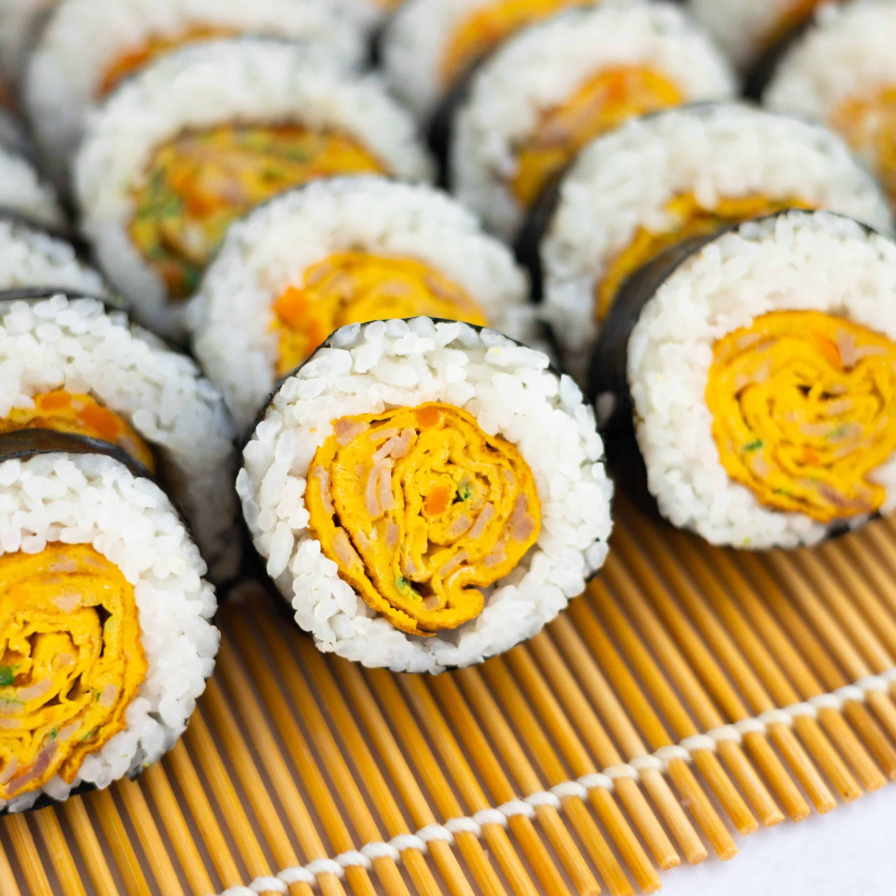

Egg Roll Recipe

Description
Korean Egg Roll Kimbap is a popular Korean dish that combines the flavors of egg rolls and kimbap. It is a delicious and versatile dish that can be enjoyed as a snack, lunch, or picnic food. The dish features a seasoned egg omelet rolled with a variety of fillings, such as vegetables, pickled radish, and sometimes ham or sausage.
Ingredients:
- 4 large eggs
- 1/4 teaspoon salt
- 1/4 teaspoon black pepper
- 2 teaspoons vegetable oil
- 4 sheets of roasted seaweed (gim/nori)
- 1 cup cooked rice, seasoned with salt
- 1/2 cup julienned carrots
- 1/2 cup julienned cucumber
- 1/2 cup julienned pickled radish (danmuji)
- 4 slices of ham or cooked sausage (optional)
Steps
- In a bowl, whisk the eggs with salt and black pepper until well combined.
- Heat a non-stick skillet or frying pan over medium heat and add the vegetable oil.
- Pour a quarter of the egg mixture into the pan, tilting it to spread the egg evenly.
- Cook the egg until it sets, about 2-3 minutes, then gently roll it up from one side of the pan to the other.
- Push the rolled egg to one side of the pan and repeat the process with the remaining egg mixture until you have four rolled omelets.
- Allow the rolled omelets to cool slightly, then slice them into thin strips.
- Place a sheet of roasted seaweed (gim/nori) on a bamboo sushi mat or a clean surface.
- Spread a quarter of the seasoned rice evenly over the seaweed, leaving a small border at the top.
- Arrange a quarter of the egg strips, julienned carrots, cucumber, pickled radish, and ham or sausage (if using) on top of the rice.
- Using the bamboo sushi mat or your hands, tightly roll the kimbap, applying gentle pressure to secure the filling.
- Repeat the process with the remaining ingredients to make three more rolls.
- Once the kimbap rolls are tightly wrapped, slice them into bite-sized pieces using a sharp knife.
- Serve the Korean Egg Roll Kimbap as is or with a side of soy sauce or Korean dipping sauce.